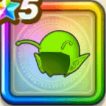

ピッコロ大魔王ヘッド
攻略班 10点 / けもの系への耐性+5%ドラゴン系への耐性+5%けもの系への耐性+5%????系への耐性+5%スキルの体技ダメージ+7%【魔法戦士】全属性ダメージ+2%イオ属性斬撃・体技ダメージ+7%デイン属性斬撃・体技ダメージ+7%
くわしい特徴
【レベル別習得スキル】 Lv1けもの系への耐性+5% Lv5ドラゴン系への耐性+5% Lv8スキルの体技ダメージ+7% Lv10【魔法戦士】全属性ダメージ+2% Lv12イオ属性斬撃・体技ダメージ+7% Lv15デイン属性斬撃・体技ダメージ+7% Lv18すべての状態異常成功率+3% Lv20けもの系への耐性+5% Lv23守備力+5 Lv25????系への耐性+5% 【限界突破スキル】 1凸攻撃力+12 2凸すばやさ+12 3凸守備力+12 4凸さいだいHP+12